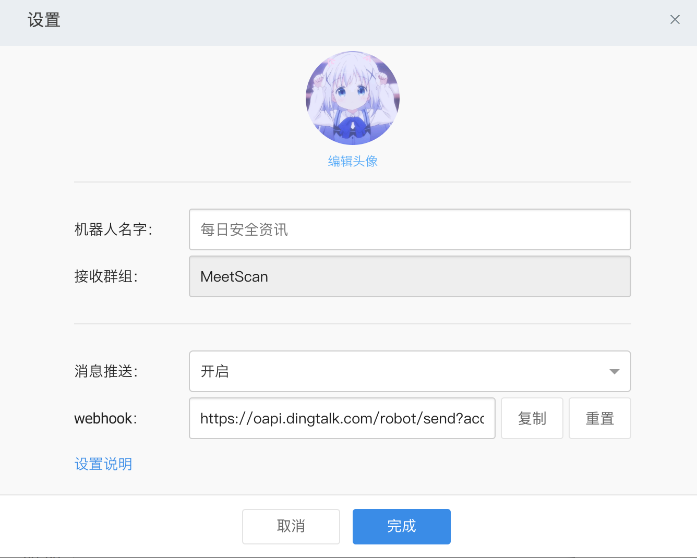
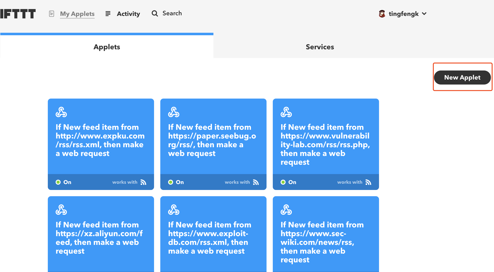
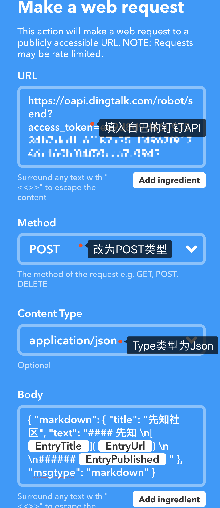
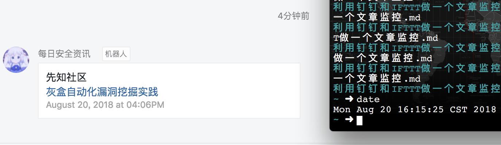

<!DOCTYPE html>


  


<html class="theme-next mist use-motion" lang="zh-CN">
<head>
  <meta charset="UTF-8"/>
<meta http-equiv="X-UA-Compatible" content="IE=edge" />
<meta name="viewport" content="width=device-width, initial-scale=1, maximum-scale=1"/>
<meta name="theme-color" content="#222">


<meta http-equiv="Cache-Control" content="no-transform" />
<meta http-equiv="Cache-Control" content="no-siteapp" />


  
  
  <link href="/lib/fancybox/source/jquery.fancybox.css?v=2.1.5" rel="stylesheet" type="text/css" />


<link href="/lib/font-awesome/css/font-awesome.min.css?v=4.6.2" rel="stylesheet" type="text/css" />

<link href="/css/main.css?v=5.1.4" rel="stylesheet" type="text/css" />


  <link rel="apple-touch-icon" sizes="180x180" href="/images/apple-touch-icon-next.png?v=5.1.4">


  <link rel="icon" type="image/png" sizes="32x32" href="/images/favicon-32x32-next.png?v=5.1.4">


  <link rel="icon" type="image/png" sizes="16x16" href="/images/favicon-16x16-next.png?v=5.1.4">


  <link rel="mask-icon" href="/images/logo.svg?v=5.1.4" color="#222">


  <meta name="keywords" content="安全,监控," />


  <link rel="alternate" href="/atom.xml" title="听风就是雨🌧️~" type="application/atom+xml" />


<meta name="description" content="简介分享一个最近GET到的一个小方法最近这段时间一直在忙扫描器，打算用钉钉接口来做预警，发现了IFTTT  关于IFTTT的介绍： IFTTT，是一个新生的网络服务平台，通过其他不同平台的条件来决定是否执行下一条命令。即对网络服务通过其他网络服务作出反应。IFTTT得名为其口号“if this then that”。  注册企业用户的钉钉注册就不说了，打开PC版钉钉 开启群机器人拿到ap">
<meta name="keywords" content="安全,监控">
<meta property="og:type" content="article">
<meta property="og:title" content="利用钉钉和IFTTT做一个安全资讯实时监控">
<meta property="og:url" content="https://twitr.cn/2018/08/20/利用钉钉和IFTTT做一个安全资讯实时监控/index.html">
<meta property="og:site_name" content="听风就是雨🌧️~">
<meta property="og:description" content="简介分享一个最近GET到的一个小方法最近这段时间一直在忙扫描器，打算用钉钉接口来做预警，发现了IFTTT  关于IFTTT的介绍： IFTTT，是一个新生的网络服务平台，通过其他不同平台的条件来决定是否执行下一条命令。即对网络服务通过其他网络服务作出反应。IFTTT得名为其口号“if this then that”。  注册企业用户的钉钉注册就不说了，打开PC版钉钉 开启群机器人拿到ap">
<meta property="og:locale" content="zh-CN">
<meta property="og:image" content="https://twitr.cn/2018/08/20/利用钉钉和IFTTT做一个安全资讯实时监控/1.png">
<meta property="og:image" content="https://twitr.cn/2018/08/20/利用钉钉和IFTTT做一个安全资讯实时监控/2.png">
<meta property="og:image" content="https://twitr.cn/2018/08/20/利用钉钉和IFTTT做一个安全资讯实时监控/3.png">
<meta property="og:image" content="https://twitr.cn/2018/08/20/利用钉钉和IFTTT做一个安全资讯实时监控/4.png">
<meta property="og:updated_time" content="2018-08-20T08:29:10.000Z">
<meta name="twitter:card" content="summary">
<meta name="twitter:title" content="利用钉钉和IFTTT做一个安全资讯实时监控">
<meta name="twitter:description" content="简介分享一个最近GET到的一个小方法最近这段时间一直在忙扫描器，打算用钉钉接口来做预警，发现了IFTTT  关于IFTTT的介绍： IFTTT，是一个新生的网络服务平台，通过其他不同平台的条件来决定是否执行下一条命令。即对网络服务通过其他网络服务作出反应。IFTTT得名为其口号“if this then that”。  注册企业用户的钉钉注册就不说了，打开PC版钉钉 开启群机器人拿到ap">
<meta name="twitter:image" content="https://twitr.cn/2018/08/20/利用钉钉和IFTTT做一个安全资讯实时监控/1.png">


<script type="text/javascript" id="hexo.configurations">
  var NexT = window.NexT || {};
  var CONFIG = {
    root: '/',
    scheme: 'Mist',
    version: '5.1.4',
    sidebar: {"position":"left","display":"post","offset":12,"b2t":false,"scrollpercent":false,"onmobile":false},
    fancybox: true,
    tabs: true,
    motion: {"enable":true,"async":false,"transition":{"post_block":"fadeIn","post_header":"slideDownIn","post_body":"slideDownIn","coll_header":"slideLeftIn","sidebar":"slideUpIn"}},
    duoshuo: {
      userId: '0',
      author: 'Author'
    },
    algolia: {
      applicationID: '',
      apiKey: '',
      indexName: '',
      hits: {"per_page":10},
      labels: {"input_placeholder":"Search for Posts","hits_empty":"We didn't find any results for the search: ${query}","hits_stats":"${hits} results found in ${time} ms"}
    }
  };
</script>


  <link rel="canonical" href="https://twitr.cn/2018/08/20/利用钉钉和IFTTT做一个安全资讯实时监控/"/>


  <title>利用钉钉和IFTTT做一个安全资讯实时监控 | 听风就是雨🌧️~</title>
  


<!-- 页面点击小红心 --> <script type="text/javascript" src="/js/src/love.js"></script>
</head>

<body itemscope itemtype="http://schema.org/WebPage" lang="zh-CN">

  
  
    
  

  <div class="container sidebar-position-left page-post-detail">
    <div class="headband"></div>

    <header id="header" class="header" itemscope itemtype="http://schema.org/WPHeader">
      <div class="header-inner"><div class="site-brand-wrapper">
  <div class="site-meta ">
    

    <div class="custom-logo-site-title">
      <a href="/"  class="brand" rel="start">
        <span class="logo-line-before"><i></i></span>
        <span class="site-title">听风就是雨🌧️~</span>
        <span class="logo-line-after"><i></i></span>
      </a>
    </div>
      
        <h1 class="site-subtitle" itemprop="description">一个程序媛和一个web狗的成长记</h1>
      
  </div>

  <div class="site-nav-toggle">
    <button>
      <span class="btn-bar"></span>
      <span class="btn-bar"></span>
      <span class="btn-bar"></span>
    </button>
  </div>
</div>

<nav class="site-nav">
  

  
    <ul id="menu" class="menu">
      
        
        <li class="menu-item menu-item-首页">
          <a href="/" rel="section">
            
              <i class="menu-item-icon fa fa-fw fa-home"></i> <br />
            
            首页
          </a>
        </li>
      
        
        <li class="menu-item menu-item-标签">
          <a href="/tags/" rel="section">
            
              <i class="menu-item-icon fa fa-fw fa-tags"></i> <br />
            
            标签
          </a>
        </li>
      
        
        <li class="menu-item menu-item-归档">
          <a href="/archives/" rel="section">
            
              <i class="menu-item-icon fa fa-fw fa-archive"></i> <br />
            
            归档
          </a>
        </li>
      
        
        <li class="menu-item menu-item-关于我们">
          <a href="/about/" rel="section">
            
              <i class="menu-item-icon fa fa-fw fa-user"></i> <br />
            
            关于我们
          </a>
        </li>
      

      
    </ul>
  

  
</nav>


 </div>
    </header>

    <main id="main" class="main">
      <div class="main-inner">
        <div class="content-wrap">
          <div id="content" class="content">
            

  <div id="posts" class="posts-expand">
    

  

  
  
  

  <article class="post post-type-normal" itemscope itemtype="http://schema.org/Article">
  
  
  
  <div class="post-block">
    <link itemprop="mainEntityOfPage" href="https://twitr.cn/2018/08/20/利用钉钉和IFTTT做一个安全资讯实时监控/">

    <span hidden itemprop="author" itemscope itemtype="http://schema.org/Person">
      <meta itemprop="name" content="听风就是雨🌧️~">
      <meta itemprop="description" content="">
      <meta itemprop="image" content="/images/avatar.png">
    </span>

    <span hidden itemprop="publisher" itemscope itemtype="http://schema.org/Organization">
      <meta itemprop="name" content="听风就是雨🌧️~">
    </span>

    
      <header class="post-header">

        
        
          <h2 class="post-title" itemprop="name headline">利用钉钉和IFTTT做一个安全资讯实时监控</h2>
        

        <div class="post-meta">
          <span class="post-time">
            
              <span class="post-meta-item-icon">
                <i class="fa fa-calendar-o"></i>
              </span>
              
                <span class="post-meta-item-text">Posted on</span>
              
              <time title="Post created" itemprop="dateCreated datePublished" datetime="2018-08-20T15:47:51+08:00">
                2018-08-20
              </time>
            

            

            
          </span>

          

          
            
              <span class="post-comments-count">
                <span class="post-meta-divider">|</span>
                <span class="post-meta-item-icon">
                  <i class="fa fa-comment-o"></i>
                </span>
                <a href="/2018/08/20/利用钉钉和IFTTT做一个安全资讯实时监控/#comments" itemprop="discussionUrl">
                  <span class="post-comments-count disqus-comment-count"
                        data-disqus-identifier="2018/08/20/利用钉钉和IFTTT做一个安全资讯实时监控/" itemprop="commentCount"></span>
                </a>
              </span>
            
          

          
          

          

          
            <div class="post-wordcount">
              
                
                <span class="post-meta-item-icon">
                  <i class="fa fa-file-word-o"></i>
                </span>
                
                  <span class="post-meta-item-text">Words count in article&#58;</span>
                
                <span title="Words count in article">
                  247
                </span>
              

              
                <span class="post-meta-divider">|</span>
              

              
                <span class="post-meta-item-icon">
                  <i class="fa fa-clock-o"></i>
                </span>
                
                  <span class="post-meta-item-text">Reading time &asymp;</span>
                
                <span title="Reading time">
                  1
                </span>
              
            </div>
          

          

        </div>
      </header>
    

    
    
    
    <div class="post-body" itemprop="articleBody">

      
      

      
        <h2 id="简介"><a href="#简介" class="headerlink" title="简介"></a>简介</h2><p>分享一个最近GET到的一个小方法<br><br>最近这段时间一直在忙扫描器，打算用钉钉接口来做预警，发现了<a href="https://ifttt.com/" target="_blank" rel="noopener">IFTTT</a></p>
<blockquote>
<p>关于IFTTT的介绍： <br><br>IFTTT，是一个新生的网络服务平台，通过其他不同平台的条件来决定是否执行下一条命令。即对网络服务通过其他网络服务作出反应。IFTTT得名为其口号“if this then that”。</p>
</blockquote>
<h2 id="注册企业用户的钉钉"><a href="#注册企业用户的钉钉" class="headerlink" title="注册企业用户的钉钉"></a>注册企业用户的钉钉</h2><p>注册就不说了，打开PC版钉钉 开启群机器人拿到api<br></p>
<h2 id="注册IFTTT"><a href="#注册IFTTT" class="headerlink" title="注册IFTTT"></a>注册IFTTT</h2><p>注册成功后，新建一个APPlet：<br>点击this-&gt;RSS Reed-&gt;New feed item-&gt;添加要订阅的RSS地址-&gt;that-&gt;Webhooks-&gt;Make a web request-&gt;填入API等。<br><br>效果如下：<br></p>
<blockquote>
<p>推荐一些安全资讯RSS<br><br>Exploit-DB Updates <a href="https://www.exploit-db.com/rss.xml" target="_blank" rel="noopener">https://www.exploit-db.com/rss.xml</a><br><br>Paper <a href="http://paper.seebug.org/rss/" target="_blank" rel="noopener">http://paper.seebug.org/rss/</a><br><br>Sec-News 安全文摘 <a href="https://wiki.ioin.in/atom" target="_blank" rel="noopener">https://wiki.ioin.in/atom</a><br><br>Vulnerability Lab (Index） <a href="https://www.vulnerability-lab.com/rss/rss.php" target="_blank" rel="noopener">https://www.vulnerability-lab.com/rss/rss.php</a><br><br>安全技术社区 <a href="https://xz.aliyun.com/feed" target="_blank" rel="noopener">https://xz.aliyun.com/feed</a></p>
</blockquote>

      
    </div>
    
    
    

    

    

    

    <footer class="post-footer">
      
        <div class="post-tags">
          
            <a href="/tags/安全/" rel="tag"><i class="fa fa-tag"></i> 安全</a>
          
            <a href="/tags/监控/" rel="tag"><i class="fa fa-tag"></i> 监控</a>
          
        </div>
      

      
      
      

      
        <div class="post-nav">
          <div class="post-nav-next post-nav-item">
            
              <a href="/2018/08/15/Feei子域名扫描器的二次编写之异步程序介绍/" rel="next" title="Feei子域名扫描器的二次编写之异步程序介绍">
                <i class="fa fa-chevron-left"></i> Feei子域名扫描器的二次编写之异步程序介绍
              </a>
            
          </div>

          <span class="post-nav-divider"></span>

          <div class="post-nav-prev post-nav-item">
            
          </div>
        </div>
      

      
      
    </footer>
  </div>
  
  
  
  </article>


    <div class="post-spread">
      
    </div>
  </div>


          </div>
          


          

  
    <div class="comments" id="comments">
      <div id="disqus_thread">
        <noscript>
          Please enable JavaScript to view the
          <a href="https://disqus.com/?ref_noscript">comments powered by Disqus.</a>
        </noscript>
      </div>
    </div>

  


        </div>
        
          
  
  <div class="sidebar-toggle">
    <div class="sidebar-toggle-line-wrap">
      <span class="sidebar-toggle-line sidebar-toggle-line-first"></span>
      <span class="sidebar-toggle-line sidebar-toggle-line-middle"></span>
      <span class="sidebar-toggle-line sidebar-toggle-line-last"></span>
    </div>
  </div>

  <aside id="sidebar" class="sidebar">
    
    <div class="sidebar-inner">

      

      
        <ul class="sidebar-nav motion-element">
          <li class="sidebar-nav-toc sidebar-nav-active" data-target="post-toc-wrap">
            Table of Contents
          </li>
          <li class="sidebar-nav-overview" data-target="site-overview-wrap">
            Overview
          </li>
        </ul>
      

      <section class="site-overview-wrap sidebar-panel">
        <div class="site-overview">
          <div class="site-author motion-element" itemprop="author" itemscope itemtype="http://schema.org/Person">
            
              
            
              <p class="site-author-name" itemprop="name">听风就是雨🌧️~</p>
              <p class="site-description motion-element" itemprop="description"></p>
          </div>

          <nav class="site-state motion-element">

            
              <div class="site-state-item site-state-posts">
              
                <a href="/archives">
              
                  <span class="site-state-item-count">4</span>
                  <span class="site-state-item-name">posts</span>
                </a>
              </div>
            

            

            
              
              
              <div class="site-state-item site-state-tags">
                <a href="/tags/index.html">
                  <span class="site-state-item-count">3</span>
                  <span class="site-state-item-name">tags</span>
                </a>
              </div>
            

          </nav>

          
            <div class="feed-link motion-element">
              <a href="/atom.xml" rel="alternate">
                <i class="fa fa-rss"></i>
                RSS
              </a>
            </div>
          

          
            <div class="links-of-author motion-element">
                
                  <span class="links-of-author-item">
                    <a href="https://github.com/tingfengking" target="_blank" title="GitHub">
                      
                        <i class="fa fa-fw fa-github"></i>GitHub</a>
                  </span>
                
                  <span class="links-of-author-item">
                    <a href="mailto:system@twitr.cn" target="_blank" title="E-Mail">
                      
                        <i class="fa fa-fw fa-envelope"></i>E-Mail</a>
                  </span>
                
            </div>
          

          
          

          
          
            <div class="links-of-blogroll motion-element links-of-blogroll-block">
              <div class="links-of-blogroll-title">
                <i class="fa  fa-fw fa-link"></i>
                Links
              </div>
              <ul class="links-of-blogroll-list">
                
                  <li class="links-of-blogroll-item">
                    <a href="http://liehu.tass.com.cn/" title="猎户Lab" target="_blank">猎户Lab</a>
                  </li>
                
                  <li class="links-of-blogroll-item">
                    <a href="http://www.hwanblog.com/" title="Hwan" target="_blank">Hwan</a>
                  </li>
                
              </ul>
            </div>
          

          
<script type="text/javascript" src="http://tajs.qq.com/stats?sId=65975683" charset="UTF-8"></script>


        </div>
      </section>

      
      <!--noindex-->
        <section class="post-toc-wrap motion-element sidebar-panel sidebar-panel-active">
          <div class="post-toc">

            
              
            

            
              <div class="post-toc-content"><ol class="nav"><li class="nav-item nav-level-2"><a class="nav-link" href="#简介"><span class="nav-number">1.</span> <span class="nav-text">简介</span></a></li><li class="nav-item nav-level-2"><a class="nav-link" href="#注册企业用户的钉钉"><span class="nav-number">2.</span> <span class="nav-text">注册企业用户的钉钉</span></a></li><li class="nav-item nav-level-2"><a class="nav-link" href="#注册IFTTT"><span class="nav-number">3.</span> <span class="nav-text">注册IFTTT</span></a></li></ol></div>
            

          </div>
        </section>
      <!--/noindex-->
      

      

    </div>
  </aside>


        
      </div>
    </main>

    <footer id="footer" class="footer">
      <div class="footer-inner">
        <div class="copyright">&copy; 2017 &mdash; <span itemprop="copyrightYear">2018</span>
  <span class="with-love">
    <i class="fa fa-user"></i>
  </span>
  <span class="author" itemprop="copyrightHolder">TingFeng&Tsystem</span>

  
</div>


  <div class="powered-by">Powered by <a class="theme-link" target="_blank" href="https://hexo.io">Hexo</a></div>


  <span class="post-meta-divider">|</span>


  <div class="theme-info">Theme &mdash; <a class="theme-link" target="_blank" href="https://github.com/iissnan/hexo-theme-next">NexT.Mist</a> v5.1.4</div>


        


        
      </div>
    </footer>

    
      <div class="back-to-top">
        <i class="fa fa-arrow-up"></i>
        
      </div>
    

    

  </div>

  

<script type="text/javascript">
  if (Object.prototype.toString.call(window.Promise) !== '[object Function]') {
    window.Promise = null;
  }
</script>


  


  
  
    <script type="text/javascript" src="/lib/jquery/index.js?v=2.1.3"></script>
  

  
  
    <script type="text/javascript" src="/lib/fastclick/lib/fastclick.min.js?v=1.0.6"></script>
  

  
  
    <script type="text/javascript" src="/lib/jquery_lazyload/jquery.lazyload.js?v=1.9.7"></script>
  

  
  
    <script type="text/javascript" src="/lib/velocity/velocity.min.js?v=1.2.1"></script>
  

  
  
    <script type="text/javascript" src="/lib/velocity/velocity.ui.min.js?v=1.2.1"></script>
  

  
  
    <script type="text/javascript" src="/lib/fancybox/source/jquery.fancybox.pack.js?v=2.1.5"></script>
  


  


  <script type="text/javascript" src="/js/src/utils.js?v=5.1.4"></script>

  <script type="text/javascript" src="/js/src/motion.js?v=5.1.4"></script>


  
  

  
  <script type="text/javascript" src="/js/src/scrollspy.js?v=5.1.4"></script>
<script type="text/javascript" src="/js/src/post-details.js?v=5.1.4"></script>


  


  <script type="text/javascript" src="/js/src/bootstrap.js?v=5.1.4"></script>


  


  

    
      <script id="dsq-count-scr" src="https://tingfengking.disqus.com/count.js" async></script>
    

    
      <script type="text/javascript">
        var disqus_config = function () {
          this.page.url = 'https://twitr.cn/2018/08/20/利用钉钉和IFTTT做一个安全资讯实时监控/';
          this.page.identifier = '2018/08/20/利用钉钉和IFTTT做一个安全资讯实时监控/';
          this.page.title = '利用钉钉和IFTTT做一个安全资讯实时监控';
        };
        var d = document, s = d.createElement('script');
        s.src = 'https://tingfengking.disqus.com/embed.js';
        s.setAttribute('data-timestamp', '' + +new Date());
        (d.head || d.body).appendChild(s);
      </script>
    

  


	


  


  


  

  

  

  
  

  

  

  

</body>
</html>
